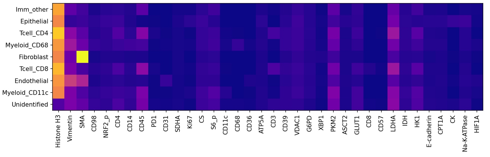
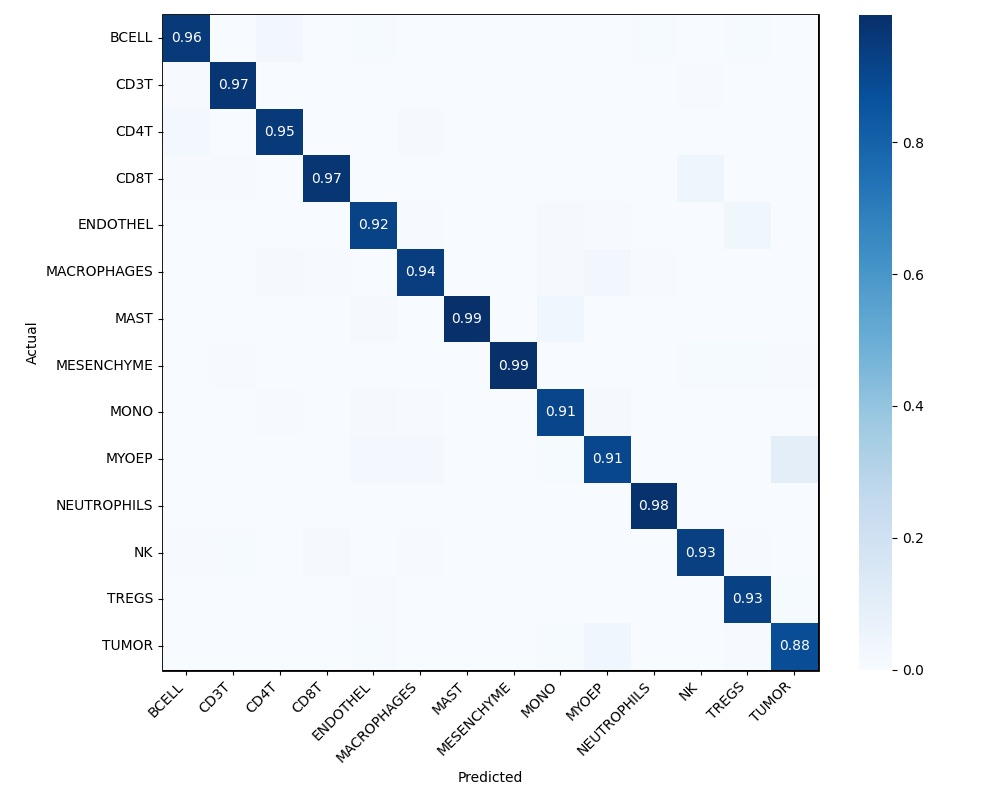

Assignment 1: Cell Classification#
Due Date
Friday 4/21 at 5pm
The purpose of this assignment is to get some practice with the machine learning pipeline – data preprocessing, setting up a model, making a training loop, and reading out metrics. In this assignment, you’ll be classifying single cell data from a MIBI-TOF experiment. You can download the data from here.
Task#
For this assignment, you should make a classifier that takes an image of a single cell as input and returns the cell type. Your model can be anything – if you’ve never done any machine learning, feel free to make a linear classifier as covered in class, but you’re welcome to try something more complicated.
Data Schema#
The data for this assignment is a sanitized version of data published by the Angelo Lab. The dataset contains *.npz files, which you can read using numpy (np.load). There are three fields in the data: X, y, and cell_types. X provides a numpy array with shape (batch, height, width, channel). y is a segmentation mask – a numpy array with shape (batch, height, width, 2). The last index referring to nuclear and whole cell segmentations respectively. cell_types is a dictionary mapping the mask indices to the cell types. To download and unarchive the data, use the following commands. The download itself may take about 10 minutes depending on your internet speed.
curl -o keren.tar.gz https://storage.googleapis.com/bebi205-spring2023/keren.tar.gz
tar -xzvf keren.tar.gz
meta.yaml contains a mapping between the cell type codes (in cell_types) and the actual cell types as strings. It also contains the names of the channels in X. A sample meta.yaml file is included below. You may notice that there are several targets that are not biological, e.g. Au, C and P. These are controls associated with the MIBI-TOF workflow and can be excluded from cell type analysis.
meta.yaml
cell_types:
0: BACKGROUND
1: TUMOR
2: MYOEP
3: FIBROBLAST
4: ENDO
5: MONODC
6: MONO
7: MACS
8: DC
9: APC
10: MAST
11: CD8T
12: CD4T
13: BCELL
14: TCELL
15: NEUT
16: IMMUNEOTHER
17: OTHER
18: FAILED_HARMONIZATION
targets:
- AR
- Au
- Ca40
- CD11c
- CD14
- CD20
- CD31
- CD36
- CD3
- CD44
- CD45
- CD4
- CD56
- CD68
- CD8
- CK5
- CK7
- COL1
- COX2
- C
- E-cadherin
- ER
- FAP
- FOXP3
- GLUT1
- GZMB
- HER2
- HH3
- HIF1a
- HLADRDPDQ
- IDO1
- Ki67
- MMP9
- MPO
- P63
- PanCK
- PD1
- PDL1
- pS6
- P
- SMA
- Tryptase
- VIM
- sum of P and Histone H3
- sum_PanCK_CD45
Suggested outline#
If you’re stuck on where to start, here’s a suggested outline.
Make the marker expression panel (see Deliverables for more details). Use this to decide which channels to keep.
Use the cell segmentations to make a training dataset, where each element is a cropped view with channel data centered on each cell. Your training dataset will reqire some amount of feature engineering (e.g., normalize the channels). Save this dataset. Note: you can make a small version of this dataset with just a couple of images, use this to debug and make sure your model is “somewhat” learning, then expand using the remaining images. You may not need the full dataset: start with a small subset and see how your model does before scaling up training.
Set up a training pipeline (e.g., with a linear model) using the dataset of individual cells.
Deliverables#
You should prepare a short report (~1 page) containing four things
A marker expression panel. This is a representation of how different markers (channels) correlate with the different celltypes. An example (for an unrelated dataset) is shown below.

The marker expression panel is meant to be a visual guide indicating correlations between individual markers and cells, to indicate which markers are important in the model. It is not designed to be a precise numerical tool, so there is no standardized approach across the literature (e.g., see the original paper in which this dataset was introduced). That being said, we suggest the following procedure.
Normalize the data.
Make a training dataset composed of cropped views of each cell.
Take the average expression of each marker within each cell. You can average twice – once over an individual cell, and once over all the total cells.
Here’s some basic pseudocode showing this process.
Normalize image # e.g., adaptive histogram normalization
Collect views of each cell and associated celltype
Initialize a marker expression panel with shape=(number of celltypes, number of markers)
Iterate through all the cell views
Take the mean marker intensity for each marker
Add the mean marker intensity to marker expression panel for the associated celltype
Average the marker expression panel over all cell instances
A confusion matrix. This plots the predicted versus the actual cell types. An example is shown below

Note: you should use a “holdout” dataset to make the confusion matrix – i.e., don’t include some small fraction of your dataset in training, and use it to both ensure your model generalizes and to make the confusion matrix (this will be a familiar idea if you’ve done ML before). See sklearn.metrics.confusion_matrix – if you have a list of predictions and ground truths, this function should generate things fairly easily.
A link to a Github repo with your code. Your code must be runnable and approximately reproduce your confusion matrix. We’ve held out several images from the dataset that we’ll use to test your code. This means your code must expose a function (and specify what that function is in your README) that accepts an
Xandy(use the data we gave you as a base), does whatever data preprocessing you want, passes it through your model, and then returns a dictionary mapping segmentation mask ids to celltype codes.There are different levels/complexity to reproducibility. For truly reproducible code, you should run your experiments from within a Docker container and commit your Dockerfile to the Git repo. For the purposes of this class, you could simply commit an
environment.yaml(generated from conda) or arequirements.txtfile. If you’re using vanilla PyTorch/Tensorflow/Jax, these will probably suffice. There are two points to remember:Save your model and upload the weights somewhere. Leave a link in your Github, and show how to load the weights (e.g., Tensorflow has
tf.keras.models.load_model). Be sure to actually try downloading and loading your model.Leave a script or Jupyter Notebook showing how to train your model and how to use your model for inference. If you use a Jupyter Notebook, be sure to check that your Jupyter Notebook actually runs from scratch!. It’s very easy for a variable to be saved in memory but not created anyway in a notebook environment.
A brief description of any issues / thoughts you have on the data, the nature of the task, downstream issues, etc. Describe any decisions and their rationale you made during data preprocessing (e.g., I included channel X because…) We emphasize brief – most of your time on this assignment should spent coding – after making the images and pushing to Github, this section of the submssion should take ~15 minutes.
General guidelines#
Keep your code modular and clean.
We aren’t grading you on performance – just think carefully about the problem and make a reasonable first pass of a model. If your data processing/model are well thought out but your accuracies aren’t great, that’s fine, just document what you think are the likely reasons your model isn’t performing well.
Start early and reach out with specific questions. You will need time to actually train the model and these things always take longer than you expect.
Submission
Submit on Canvas by April 21st at 5pm.